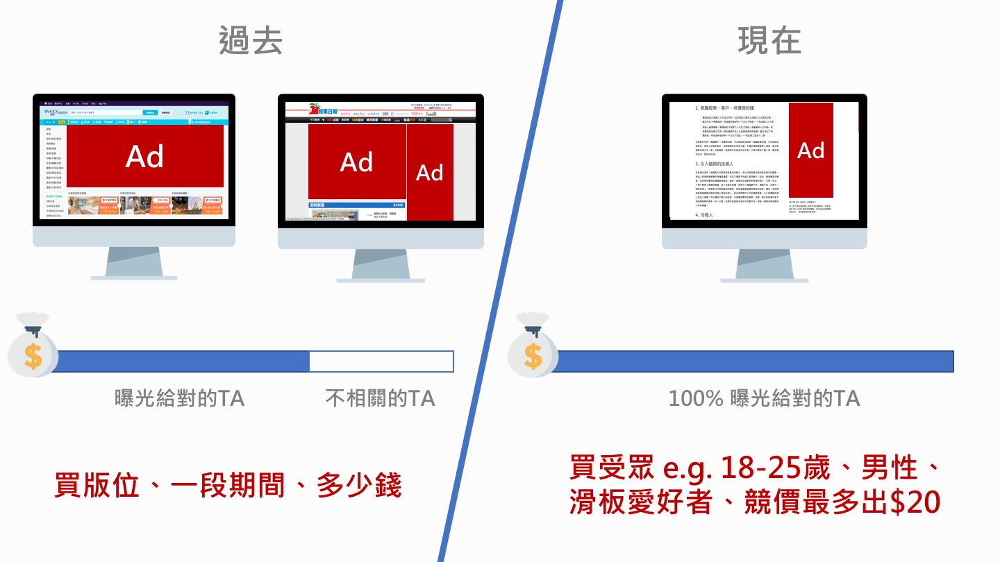

數位廣告基礎入門：程式化廣告 Programmatic Advertising
程式化廣告（Programmatic Advertising）是指廣告主（Advertiser）通過數位平台從受眾的匹配的角度由程式自動化完成展示類廣告的採買和投放，並即時反饋投放分析的一種廣告投放方式，實現整個數位廣告的自動化。

何謂程式化廣告
程式化廣告（Programmatic Advertising）是指廣告主（Advertiser）透過數位平台從受眾的匹配的角度由程式自動化完成展示類廣告的採買和投放，並即時反饋投放分析的一種廣告投放方式，實現整個數位廣告的自動化。
程式化廣告的特點
程式化廣告以下幾個特點：
數位平台
程式化廣告是透過數位平台去投放的，這裡的數位平台就是只指 DSP 和 Ad Exchange，程式化廣告是透過在這兩個平台去撮合交易，這個程式化廣告最基本的特點，如有些媒體方的廣告投放平台，也可以投放廣告，但投放的平台不是通過 DSP，而是出版商廣告投放平台，這就不屬於程式化廣告，如垂直媒體廣告投放平台，這些平台的部分剩餘流量可能會接入到公開交易市場。
受眾角度
廣告策略是從受眾匹配的角度出發，通過標籤識別用戶對每一次的展示機會做競價，從而實現精準行銷。從這個角度出發的話可以說程式化廣告是精準行銷的最恰當的詮釋。
從受眾的角度這個是跟傳統廣告對比的：

傳統廣告購買的是廣告版位，比如某個網站廣告版位一個星期多少錢，購買後，我的廣告就在這一個星期內展示，所有的用戶都可以看到，不管是不是我的潛在用戶，如果將這筆錢平攤到麼一個展示上，就會有部分錢是花在了，不是我潛在用戶上面了，這筆錢就是浪費了，但是現在，在程式化廣告上，從受眾的角度去購買廣告位，也就是只有是我的潛在用戶的，我的廣告才會展示給他，才會對這次廣告付費，展示更加精準了，可以說是精準行銷了，能大幅減少廣告主的廣告費投放。
程式自動化
根據出版商（Publisher）競價請求提供的資訊，依據廣告策略和演算法自動完成對每次展示機會的競價決策，如是否出價，以及出價多少，返回都是毫秒級別；不需要人去干涉，非常高效。
有些甚至實現了自動優化的功能，如動態素材優化。
程式化廣告的優點
程式化廣告就能夠避免廣告投放中的一些問題，而且對出版商和廣告主都是有好處的：
對於出版商而言
- 提升廣告交易效率、擴大交易規模。
- 可提升長尾流量填充率並將廣告差異化定價販售給廣告主。
- 本質上就是，能對廣告位的售賣更充分，得到更多的廣告收入。
對於廣告主而言
- 精準行銷，基於受眾的購買，DSP 平台會有很多的標籤或底層會對接 DMP，在 DMP 上可以設置很多的定向投放的標籤，廣告主可以選擇對應的標籤進行投放。
- 廣告投放自動化，提高效率：程式廣告是數位廣告投放的自動化，可以極大提高廣告交易的效率，節約人力成本。
- 跨媒體／終端投放，這個是跟傳統對比的，傳統的，如果你跟 A 媒體簽約，那麼你的廣告就只會出現在 A 媒體上了，B 媒體沒有簽約，不會出現你的廣告，但是程式化廣告，你只要跟需求方，也即是 DSP 簽約，你的廣告就可能出現在 A 和 B 的網站上了，能跨媒體投放，而且還能跨終端。以往的需要逐個跟出版商簽約的，現在不需要，這在效率上也是一個提升。
- 即時優化廣告效果：傳統是，投放停止後等出版商反饋給你才有數據，程式化廣告投放後的數據是即時反饋的，廣告主隨時可以在廣告投放的過程中對廣告做優化。所以這是非常有利於廣告主，但是這並不是程式化廣告的特有優點，可以說，線上廣告的都具備。
參考資料
本部落格所有文章除特別聲明外，均採用 CC BY-SA 4.0 協議 ，轉載請註明出處！